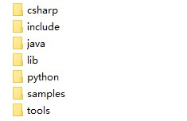

SDK使用说明¶
SDK目录结构¶
SmartToF SDK目录包括Android,doc,firmware,linux,ros,windows等目录，如 下图2-3 所示：

Windows目录结构如下图所示：

Linux目录结构如下图所示：
csharp目录主要包括C#样例的动态链接库，如dmcam_csharp.dll.
Windows目录下的drivers目录是在windows下的模组设备驱动。
lib目录主要包括SDK的lib等文件，如libdmcam.dll,libdmcam.lib。
python目录主要包括各个python版本的whl文件，如dmcam-1.56.0-cp34m-win32.whl。
samples包括C/C++,python,java等示例程序。
tools下主要包括smarttofviewer显示工具和smarttof cli命令行工具。
SDK Sample¶
其他¶
SDK技术交流QQ群：708148203
SDK下载地址: https://github.com/smarttofsdk/SDK/releases
SDK更新地址: https://github.com/smarttofsdk/SDK